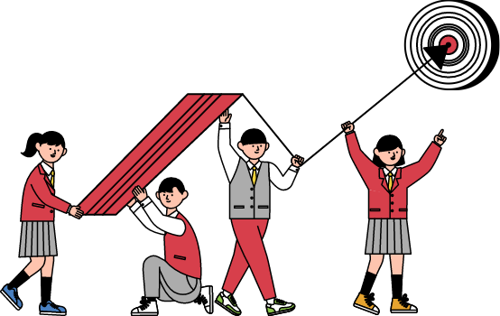

글 + TEEN = 글틴
글틴은
한국문화예술위원회에서 운영하는 국내 유일의 청소년 문학사이트 글틴은 한글 '글'과 영어 'TEEN'의 합성어로, 13-18세의 문학에 관심있는 청소년이라면 누구나 글틴에서 글을 읽고, 쓰고, 놀 수 있습니다. 또래 청소년들과 문학으로 소통하는 글틴러가 되고 싶으신가요? 언제나 문은 열려 있답니다. 글틴에서 문학으로 함께 놀아요!
장르별 멘토-멘티 제도
장르별(감상&비평, 소설, 수필, 시) 창작 게시판에는 여러분보다 먼저 그 분야에서 활동하고 있는 멘토님이 계시답니다. 여러분이 글을 올리면, 멘토들이 수시로 글을 읽고 피드백 해줄 거예요. 그동안 꽁꽁 숨겨왔던 글이 있다면 글틴 게시판에 올려주세요.
감상&비평
 오은교 평론가
오은교 평론가
오은교 평론가
소설
송지현 소설가
수필
문부일 소설가
시
조해주 시인
시
최백규 시인
"메달 따고, 선물 받고!"
월장원 선정 제도
매월 한 달간 올라왔던 글 중 우수 창작글을 선정하여 월장원으로 선정하고 소정의 상품을 드립니다. 월장원으로 선정된다면, 문장청소년문학상의 후보가 되고 '명예의 전당' 게시판에 전시됩니다. 명예의 메달을 따고 선물도 받는 즐거움을 느껴봐요

문장 청소년문학상
1년 동안의 월장원 선정자 중 문장청소년문학상 수상자를 선정합니다. 문학 청소년들이 가장 활발하게 활동하는 문학사이트 글틴에서, 올해의 문학청소년문학상 수상자가 되어보세요!